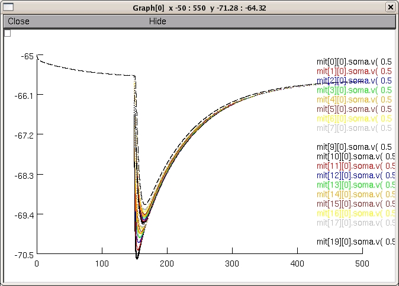

%%%%%%%%%%%%%%%%%%%%%%%%%%%%%%%%%%%%%%%%%%%%%%%%%%%%%%%%%%%%%%%%%%%
% Instructions about the LongDendrite and ShortDendrite Programs %
%%%%%%%%%%%%%%%%%%%%%%%%%%%%%%%%%%%%%%%%%%%%%%%%%%%%%%%%%%%%%%%%%%%
LongDendrite is the directory including the programs to study the
influence of the synaptic input location in a lateral dendrite with
100 compartments. ShortDendrite is the directory to study, first the
influence of varying the intermediate resistance between the lateral
dendrite and the soma of the Davison Cell (taken from Davison et al
2003) and second the influence of noise on ISI distribution.
%%%%%%%%%%%%%%
%Under Linux:%
%%%%%%%%%%%%%%
%%%%%---------------------------------------------------------------
% 1 % -Access to the programm interface
%%%%%---------------------------------------------------------------
Open a terminal.
Go to the directory LongDendrite or ShortDendrite
Compile the mod files at least the first time you use the programs in
typing " nrnivmodl "
Start Neuron and the programs, in typing "nrngui mosinit.hoc "
%%%%%---------------------------------------------------------------
% 2 -Run the experiments
%%%%%---------------------------------------------------------------
2-1 The Long Dendrite experiments
-----------------------------------
If you are in the directory LongDendrite, then you have the choice to
run the experiments related to either the Figure1 or the Figure2.
If you click on the Figure1 then you have the choice between the
fig1bde and the fig1fg. You just have to click on the button to run
it.
For example clicking on Figure 1 and then fig 1_bde will display after
some minutes

Before running it, you may want to change some parameters. Some are
specific for the fig2bde, these will not change anything to the fig1fg.
If you click on Figure2, then you have only one choice of experiment
and you can choose the parameters you want.
In any case to choose the parameters, you can either roll the rolling
button or type directly the value in the case.
2-2 The Short Dendrite experiments.
------------------------------------
If you are in the ShortDendrite directory, after compiling the mod
files and starting NEURON, you can choose to realize the six figures
and then you click the associated subfigure buttons names.
Be careful, a new run of one experiments run over precedent data file,
if you want to save the previous data files, remove them from the
directory.
Finally, experiments 4 and 6 might take at least one day or even more,
depending on the number of trials and the machine you run the
experiments. Closing the figure, help going slighltly faster.
%%%%%---------------------------------------------------------------
% 3 -Plot the figures
%%%%%---------------------------------------------------------------
To represent the figures, then open matlab, "matlab" command. Go to
the directory ShortDendrite or LongDendrite
In the LongDendrite directory, you can type the name of the programs:
fig1bde note: you need to superpose figure1cde to it for the
complete figure. To do this, go to the ShortDednrite
directory and type the command figure1cde
fig1fg note: you need to superpose figure1fg to it. To do
this, go to the ShortDednrite directory and type the
command figure1fg
fig2ace
All the parameters and data file names are already set.
In the Shortdendrite directory, you can type the name of the programs:
figure1cde
figure1fg
figure2bdf
figure3
figure4abcd(n_trial,gI)
figure4ef(n_trial)
figure5(n_trial)
figure6(n_trial)
For fig 1d and 1e, to represent the result of the long dendrite and
the short dendrite on the same graph, it is necessary to play with the
index of fig and hold on the figures, in the matlab programs.
n_trial is the number of noise realization that has been set in the
parameter box in the GUI interface of Neuron. gI is the conductance
of the inhibitory event.
For the fig4 and 6 at least 200 hundred trials are necessary to have
an idea of the result, and 5000 are necessary to have a good-looking
graph shape and a good significativity.
For fig5 at least 20 trials are necessary for a result and 50 for the
graph of the article.
Lastly, if you change some parameters which are included in the names
of the data files, then you need to change these names in the matlab
files.
PS: It is also intended that the properties of the simulation can be
explored by changing the files parameters_.hoc and
experiment_.hoc. It should not be necessary to change the other
files. Exceptionally you can change the bulb.hoc, and mod files (for
which you need to recompile each time you change something by the
command : nrnivmodl).
PPS: Some graphs should require some slight modifications of the
matlab programs.
NB: Sometimes, especially for the simulation with the noise, the
graphes could look like strange or different from the article. Then it
is recommended, to set the limits of ISI by hand of the histogramms
distribution instead of the automatic limit sets.
For further information you can contact me at
fdavid at olfac.univ-lyon1.fr
20110504 Bug fix in the ShortDendrite folder by Tom McTavish who
noticed v was missing from the PARAMETER block of ipscGauss.mod
20130327 Replacement of xopen (which contained arguments "mitral.tem"
or "granule.tem") with load_file as suggested by Michael Hines for
re-running of simulations without an error message.
20130327 Added a top-level mosinit.hoc for an auto-launch demo (TMM).